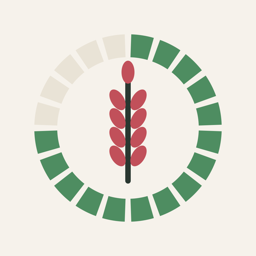

Riktig MatIntegritetspolicy för Riktig Mat
Riktig Mat samlar inte in några personuppgifter.
- Inget konto. Du behöver inte registrera dig eller logga in.
- Historiken stannar på telefonen. Det du skannar sparas bara lokalt på din enhet och raderas när du rensar historiken eller tar bort appen.
- Kameran används bara för att läsa streckkoder och ingredienslistor. Bilderna behandlas på telefonen och skickas eller sparas inte.
- Produktuppslag. När du skannar en vara skickas streckkoden till den öppna databasen Open Food Facts för att hämta produktdata. Ingen information om dig skickas med. Open Food Facts behandlar förfrågningar enligt sin egen integritetspolicy.
- Ingen spårning, ingen reklam och inga analysverktyg.
Frågor? Kontakta oss på johanstudt@gmail.com.